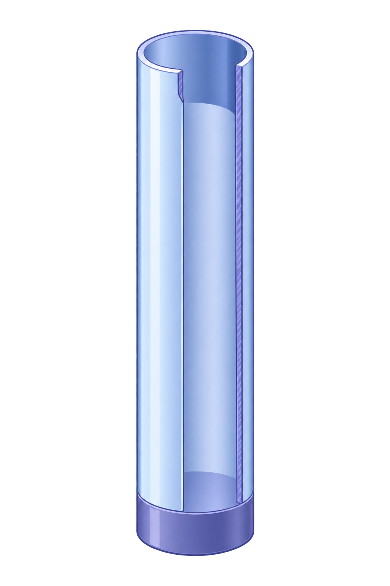

未知聲音
樣本 A
先完整聽一次，記下你想檢查的聲音特徵。
第二步：看頻譜
播放後會顯示主要頻率峰值。
第三步：配對規律
規律甲：(f_0, 2f_0, 3f_0, …)
規律乙：(f_0, 3f_0, 5f_0, …)
規律丙：大致是整數倍，但高次峰可能略微偏移。
哪一張規律卡最接近你看到的峰值？
第四步：揭曉
樣本 A 是理想一端閉管模型聲，不是實際樂器錄音。它刻意只放入 300 Hz、900 Hz、1500 Hz 三個成分，也就是 f、3f、5f；因此可清楚觀察一端閉、一端開管柱的奇次諧波規律。

延伸：從模型走向真實
這個模型刻意排除了吹奏起音、按孔、簧片與喇叭口等因素。頁面下方保留原本的真實單簧管錄音，請比較它為何不會只剩奇次諧波。